Examen Municipal Licencia Clase C - 2024
Tiempo restante: 45:00
1. ¿Por qué es importante usar zapatos apropiados cuando conduce?
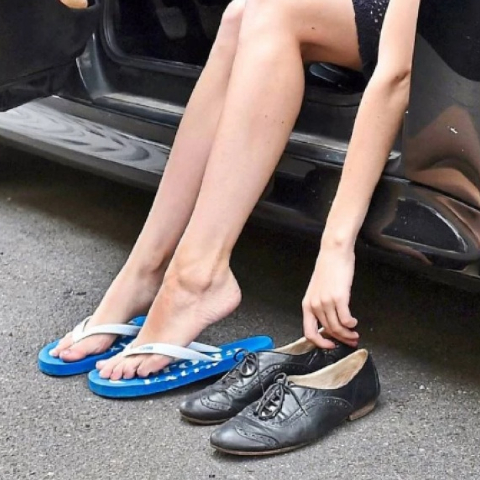
A) Para tener un adecuado control de los pedales.
B) Para evitar el desgaste acelerado de las gomas de los pedales.
C) Para poder efectuar los cambios de marcha más rápidamente.
D) Para poder caminar sin problemas en el caso que necesite solicitar ayuda.
2. Ante una emergencia, un conductor requiere estacionar de noche en una carretera sin alumbrado y con buenas bermas, ¿Cuál de las siguientes medidas debe realizar el conductor?
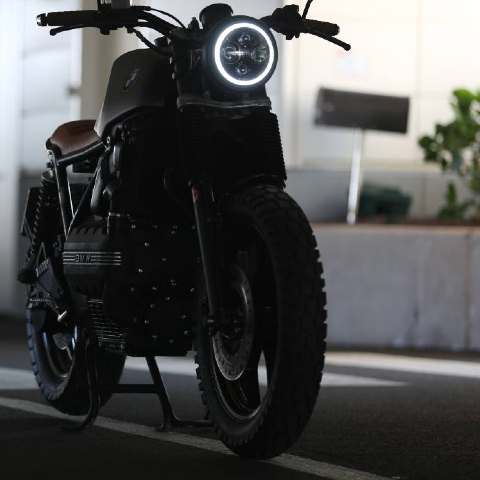
A) Estacionar al costado izquierdo enfrentando la circulación.
B) Ocupar el menor espacio posible de la berm.
C) Mantener encendidas sus luces de estacionamiento.
D) Utilizar señales de emergencia para alertar a otros conductores.
3. El freno principal en la motocicleta es el:
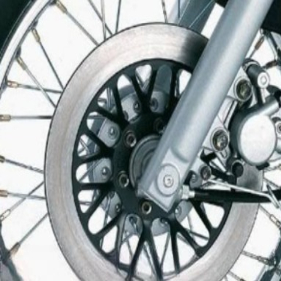
A) Delantero
B) Trasero
C) Freno de estacionamiento
4. Cuando sea adelantado usted deberá:
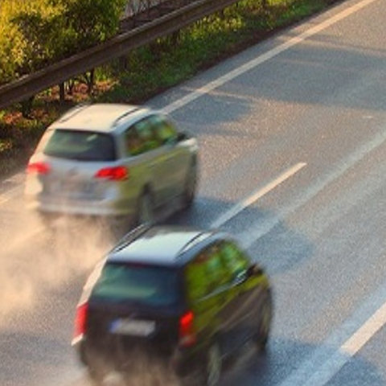
A) Facilite el adelantamiento manteniéndose lo más a la derecha posible.
B) No aumentar la velocidad.
C) Todos los mencionados.
D) En caso de peligro haga todo lo que pueda para ayudar a quien lo adelante.
5. La distancia de detención total es igual a la suma de la distancia de reacción y la de frenado. Aproximadamente, ¿Cuál es la mínima distancia de detención total en un asfalto seco, si usted viaja a 90km/h?
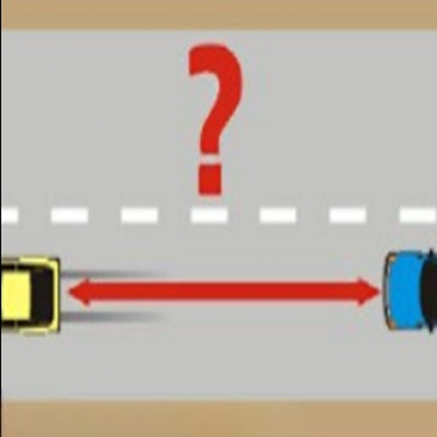
A) Unos 30 metros
B) Unos 120 metros
C) Unos 50 metros
D) Unos 70 metros
6. Entre otras normas, en que lugares está prohibido estacionarse y detenerse:
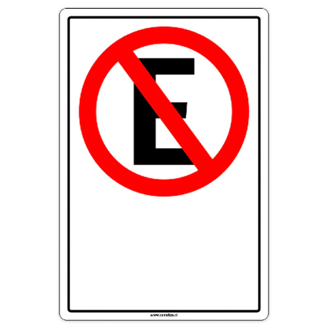
A) En las calzadas o bermas de caminos públicos de 2 o más pistas de circulación en un mismo sentido
B) Dentro de un cruce
C) Al costado o al lado opuesto de cualquier obstrucción de tránsito, excavación o trabajos en la calzada
D) Todas las mencionadas
7. El peso del cuerpo en la motocicleta, ¿debe descansar en los...?
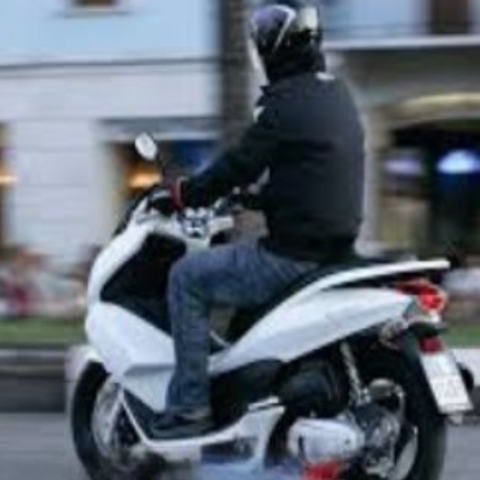
A) Entrepierna
B) Glúteos
C) Rodillas
D) Todas las anteriores
8. Podemos saber la cantidad de revoluciones del motor por:
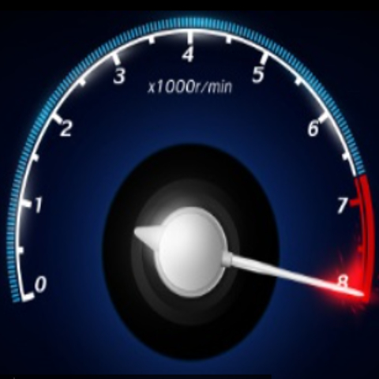
A) El sonido al conducir
B) El Tacometro
C) El Odometro.
D) El velocimetro
9. ¿Quién otorga las licencias de conducir?
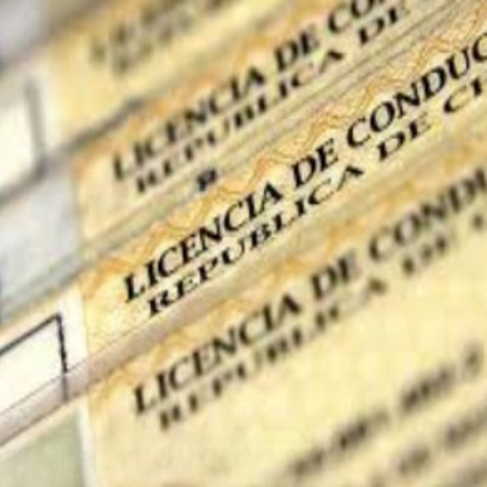
A) Carabineros
B) La municipalidad
C) Departamento de transito de la municipalidad
D) Escuela de conductores
10. Un mal funcionamiento del sistema de suspención, ¿en qué puede afectar?
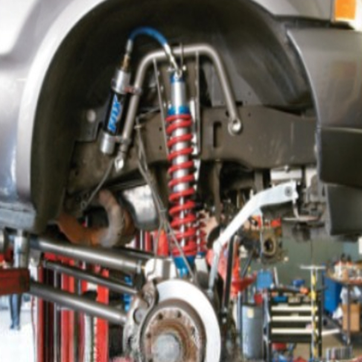
A) Puede verse afectado en la potencia del vehículo
B) Puede verse afectado en el frenado del vehículo
C) Puede verse afectado en el control del vehículo
D) Puede verse afectado en el rendimiento del vehículo
11. ¿Qué significa esta luz de advertencia en el panel de instrumentos?
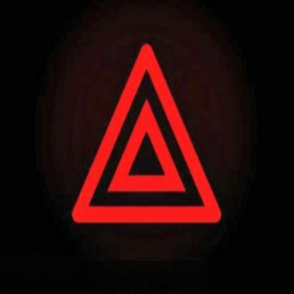
A) Freno de mano puesto
B) Luces altas
C) Intermitentes de advertencia de peligro
D)
12. ¿Cuáles son los sistemas de refrigeración del motor de una motocicleta?
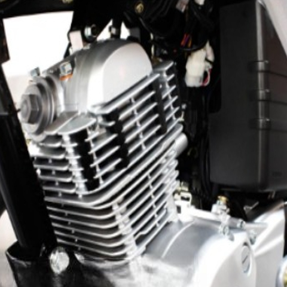
A) Solamente aire
B) Solamente líquido y aceite
C) Solamente líquido
D) Solamente líquido y aire
13. ¿Cuál es la función principal del embrague en una motocicleta?
A) Aumentar la velocidad
B) Permitir el cambio de marchas
C) Frenar el vehículo
D) Controlar la dirección
14. ¿Qué tipo de aceite se recomienda para el motor de una motocicleta?
A) Aceite de cocina
B) Aceite mineral
C) Aceite sintético
D) Aceite de motor específico para motocicletas
15. ¿Qué debe hacer un motociclista al acercarse a una curva?
A) Acelerar
B) Frenar bruscamente
C) Inclinarse hacia el interior de la curva
D) Mantener la posición vertical
16. ¿Cuál es la función del freno trasero en una motocicleta?
A) Aumentar la velocidad
B) Proporcionar estabilidad al frenar
C) Frenar solo la rueda delantera
D) No tiene función
17. ¿Qué equipo de protección es esencial para un motociclista?
A) Solo casco
B) Casco, chaqueta y guantes
C) Solo chaqueta
D) Ninguno
18. ¿Cuál es la principal causa de accidentes en motocicletas?
A) Condiciones climáticas
B) Mal estado de la carretera
C) Falta de visibilidad
D) No existe causa
19. ¿Qué significa el indicador de "temperatura del motor" en el panel?
A) El motor está frío
B) El motor está sobrecalentado
C) El motor está en buen estado
D) No tiene importancia
20. ¿Cómo debe un motociclista posicionar sus pies al conducir?
A) Colocarlos en el suelo
B) Mantenerlos en los estribos
C) Colocarlos sobre el manillar
D) No hay una posición correcta
21. ¿Qué se debe hacer antes de iniciar un viaje en motocicleta?
A) Revisar el nivel de combustible
B) Comprobar los frenos y luces
C) Ajustar el casco
D) Todas las anteriores
22. ¿Cuál es la distancia mínima que se debe mantener al seguir a otro vehículo?
A) 1 metro
B) 2 segundos
C) 5 metros
D) 10 segundos
23. ¿Qué se debe hacer si se siente deslizamiento en la rueda trasera?
A) Acelerar
B) Frenar bruscamente
C) Soltar el acelerador y mantener la calma
D) Cambiar de dirección
24. ¿Qué tipo de luces se deben usar al conducir de noche?
A) Luces de posición
B) Luces altas
C) Luces bajas
D) Ninguna de las anteriores
25. ¿Qué debe hacer un motociclista al cruzar una intersección?
A) Acelerar para pasar rápidamente
B) Reducir la velocidad y mirar a ambos lados
C) Ignorar las señales de tránsito
D) No es necesario hacer nada
26. ¿Qué indica un sonido irregular del motor?
A) Que el motor está en buen estado
B) Que debe ser revisado
C) Que no hay problemas
D) Que el motor necesita aceite
27. ¿Cuál es la forma correcta de frenar en una motocicleta?
A) Usar solo el freno delantero
B) Usar ambos frenos de manera equilibrada
C) Usar solo el freno trasero
D) Frenar de golpe
28. ¿Qué es el "contramanillar"?
A) Girar el manillar en la dirección opuesta
B) Girar el manillar hacia la dirección deseada
C) Mantener el manillar recto
D) No es necesario
29. ¿Qué mantenimiento regular es esencial para una motocicleta?
A) Cambiar el aceite cada 10,000 km
B) Revisar la presión de los neumáticos cada mes
C) Limpiar el filtro de aire cada 5,000 km
D) Todas las anteriores
30. ¿Por qué es importante usar un casco al conducir una motocicleta?
A) Solo por estilo
B) Para proteger la cabeza en caso de accidente
C) No es necesario usarlos
D) Todas las anteriores
31. ¿Cuál de las siguientes es una característica de un buen conductor?
A) Ignorar las señales de tránsito
B) Conducir a alta velocidad
C) Usar el teléfono móvil mientras conduce
D) Mantener la atención y respetar las normas de tráfico
32. ¿Dónde es más probable que aparezca el sueño al conducir, incluso si se ha dormido bien?
A) En carreteras rectas durante el día
B) En la noche
C) En zonas urbanas
D) En caminos montañosos
33. ¿A cuántos metros de un cruce ferroviario a nivel se puede estacionar?
A) 5 metros
B) 10 metros
C) 15 metros
D) 20 metros
34. Por regla general, ¿cómo debes estacionar tu vehículo?
A) En cualquier lugar
B) De manera que no obstruya el paso
C) Con las luces apagadas
D) Con las ruedas giradas hacia la acera
35. En épocas de invierno, ¿dónde es más previsible que haya hielo en la calzada?
A) Sobre puentes y en tramos de vía que pasan entre bosques
B) En zonas urbanas
C) En carreteras de montaña
D) En caminos de tierra
Reiniciar
Ver resultados